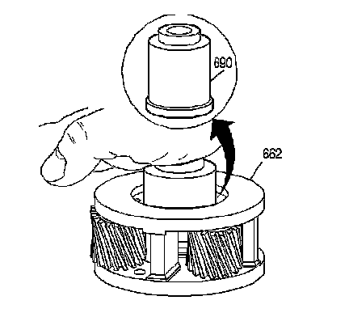
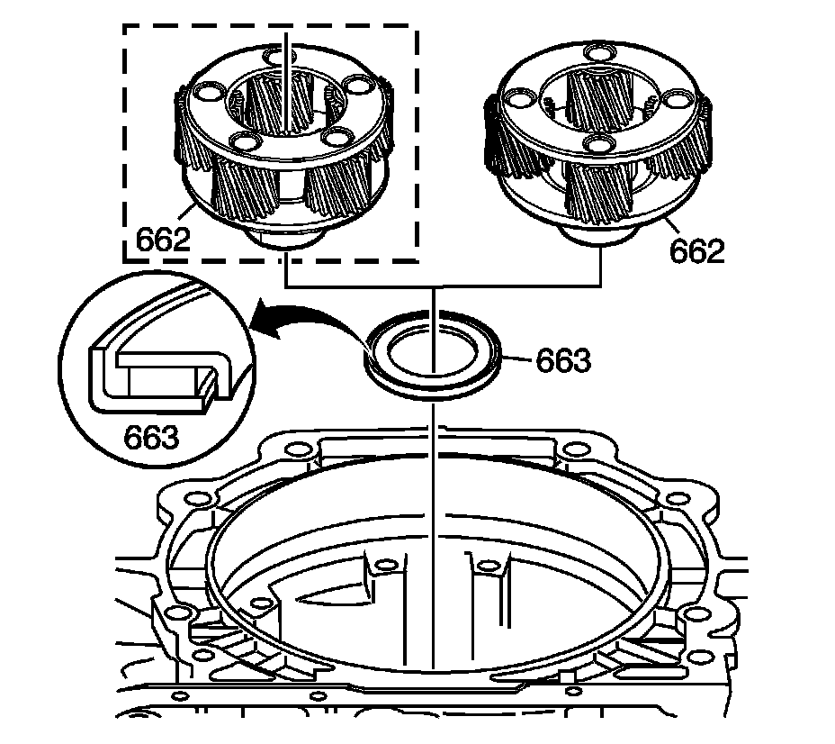
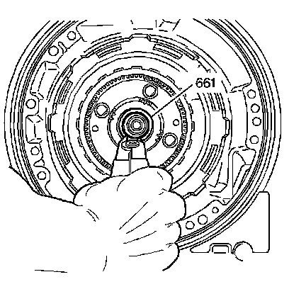

Input Carrier Inspection and Installation
Input Carrier Inspection and Installation
Tool Required
J 36850 Transjel Lubricant

1. Inspect the input carrier captive thrust bearing assembly. To check the captive thrust bearing in the input carrier (662) for wear, place a bushing or an output shaft sleeve (690) onto the bearing race and turn it with the palm of your hand. Do not touch the pinion gears. Any imperfections will be felt through the bushing.

2. Install the thrust bearing assembly (663) on the input carrier (662). Retain bearing with J 36850.
3. Install the input carrier assembly (662) onto the output shaft. The carrier assembly can be either a 4 or 5 pinion design, depending on model.

Important:
^ Do not reuse the old output shaft to input carrier retainer (661).
^ Do not over expand the new output shaft to input carrier retainer during installation.
Install a new output shaft to input carrier retainer (661).

4. Remove the J 29837-A.